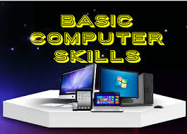

Essential Computer Skills
About the Course:
This course provides foundational skills in computing, aimed at beginners or those looking to enhance their understanding of basic computer operations. It covers essential applications and tools used in everyday computing tasks.
Course Content:
- Introduction to Computers: Basics of hardware, software, and operating systems.
- File Management: Understanding file structures, directories, and file types.
- Office Software: Use of word processors (Microsoft Word), spreadsheets (Excel), and presentation software (PowerPoint).
- Internet and Email: Browsing the web, using search engines, sending/receiving emails, and internet security basics.
- Basic Troubleshooting: Identifying common computer problems and how to resolve them.
- Introduction to Cloud Computing: Understanding cloud storage and basic cloud services.
Web Development

About the Course:
This course covers the design and development of websites. It teaches how to create functional, aesthetically pleasing, and user-friendly websites using a combination of programming languages and technologies.
Course Content:
- HTML & CSS: Learning the structure and styling of web pages.
- JavaScript: Adding interactivity and dynamic features to websites.
- Responsive Design: Creating websites that work well on desktops, tablets, and smartphones.
- Web Development Frameworks: Introduction to tools like Bootstrap for faster web design.
- Back-End Development: Introduction to databases and server-side scripting using languages such as PHP, Node.js, or Python.
- Content Management Systems (CMS): Understanding tools like WordPress, Joomla, or Drupal for building dynamic websites.
- SEO Basics: Learning how to optimize websites for search engines.
- Website Deployment: Publishing websites to hosting servers and managing domains.
Networking

About the Course:
This course introduces the fundamentals of computer networking, including how devices connect and communicate over local area networks (LAN), wide area networks (WAN), and the internet.
Course Content:
- Introduction to Networking: Overview of network types, topology, and basic networking devices (routers, switches).
- IP Addressing: Understanding IPv4, IPv6, subnets, and how addresses are assigned.
- OSI Model: Introduction to the 7 layers of networking and how data moves through networks.
- Network Protocols: Study of protocols like TCP/IP, HTTP, FTP, and DNS.
- Wireless Networking: Basics of Wi-Fi, Bluetooth, and other wireless technologies.
- Network Security: Concepts such as firewalls, encryption, VPNs, and securing a network.
- Routing and Switching: Understanding routing protocols (e.g., RIP, OSPF) and how switches and routers function.
- Network Troubleshooting: Techniques to diagnose and fix network issues.
- Advanced Topics: Introduction to network design, cloud networking, and SDN (Software Defined Networking).